Art
The Most Influential Artists of 2024
Artvibe Creativity
Jun 23, 2025 12:32PM

Jeffrey Gibson, installation view of WE HOLD THESE TRUTHS TO BE SELF-EVIDENT, 2024 in “the space in which to place me” at the U.S. pavilion at the 60th International Art Exhibition - La Biennale di Venezia, 2024. Photo by Timothy Schenck. Courtesy of the U.S. pavilion.
In 2024, there were major shifts in the art world. The first headline event came in April, when the Venice Biennale opened, projecting a new cadre of artists into the spotlight. The international exhibition “Foreigners Everywhere,” curated by Adriano Pedrosa, highlighted Indigenous and queer artists outside the Western art world, many of whom went on to receive international gallery shows, rolling the show’s influence across the globe. With underrecognized artists such as these gaining new acclaim, 2024 looked like a year of adjustment towards a canon that is, thankfully, growing all the time. As art fairs have proliferated across the world and emerging markets develop in importance, art world power is shifting globally, with Middle Eastern and Asian metropolises growing in stature. Against this backdrop, in 2024, artists were often vocal activists for the causes that mattered to them. Influence, for artists this year, was measured not just by what they did within the walls of the gallery, but the collaborations, statements, and impact they made in the outside world.
Julie Mehretu
B. 1970, Addis Ababa. Lives and works in New York and Berlin.
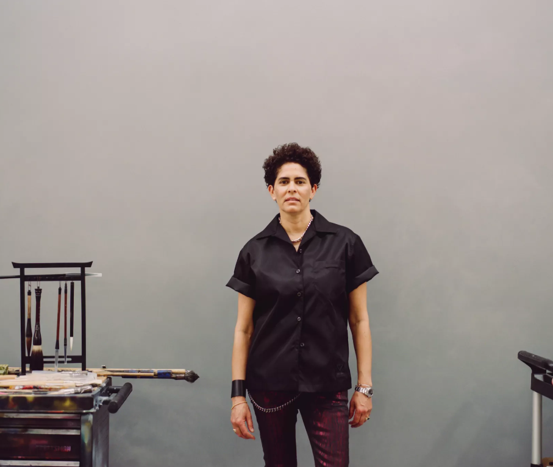
Known for her frenetic markmaking and meticulously layered paintings,
Julie Mehretu cemented her place as one of the preeminent abstract artists
in the world this year.
Her high-profile year was marked by both market and institutional milestones.
Insile (2013) sold for $9.5 million at the third edition of Art Basel Paris,
while her largest European exhibition to date, “Ensemble,” opened at Palazzo Grassi
just before the 2024 Venice Biennale and will run through January 2025.
If that wasn't enough to make her one of the most influential names of the year,
Mehretu was tapped to create an installation for the new Obama Presidential Center
in Chicago, which will adorn the museum's façade when the campus opens in 2026.
In New York, where the artist is based, she contributed $2.25 million to the Whitney
Museum's new “Free 25 and Under” program, ensuring greater accessibility for the next
generation of art enthusiasts.
Potentially the flashiest landmark of Mehretu's year is her design for the 20th BMW Art Car.
Unveiled in May at the Centre Pompidou, her design for the BMW M Hybrid V8 represents her
explosive aesthetic, drawing directly from her painting Everywhen (2021-23), which
is currently on view in her Palazzo Grassi retrospective.
—Maxwell Rabb
Jeffrey Gibson
B. 1972, Colorado Springs. Lives and works in Hudson, New York.
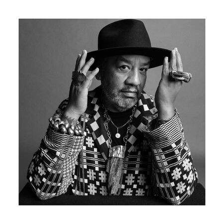
The first Native American artist to represent the U.S. in a solo presentation at the Venice Biennale, Jeffrey Gibson made sure his solo pavilion had a critical edge. His installation, an explosion of color and geometric forms, challenged restrictive colonial narratives and celebrated Indigenous and queer identities. The show was named by Artsy as one of the 10 best pavilions at the 2024 biennale, featuring sculptures adorned with bright tassels and colorful, text-laden paintings. The year began auspiciously for Gibson as he opened “They Teach Love” at the Jordan Schnitzer Museum of Art in Oregon. This major exhibition, showcasing 15 years of his work, ran from just before the new year through March 2024. By October, mega-gallery Hauser & Wirth had announced global representation of the artist in collaboration with Sikkema Jenkins & Co.
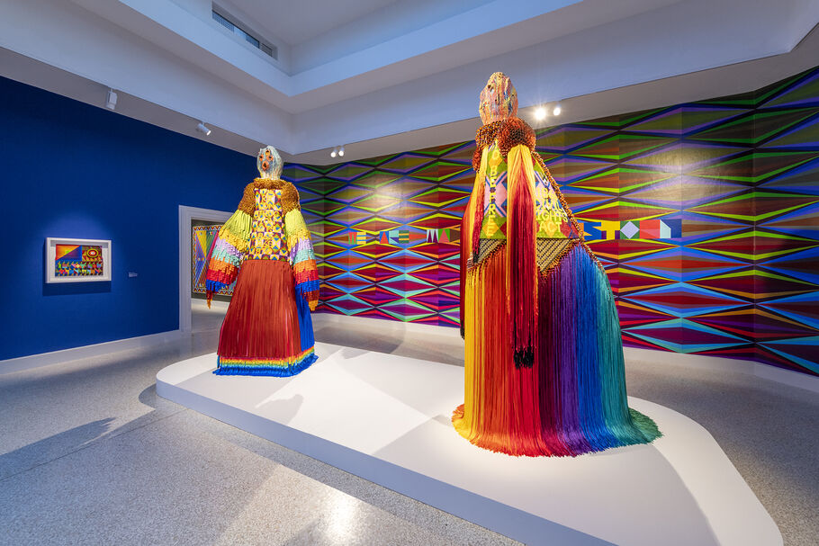
If representing the U.S. at the Venice Biennale wasn’t enough, Gibson secured one of the most prestigious
commissions of his career: The Met’s Fifth Avenue façade. His contribution, set to feature four monumental
“ancestral spirit figures,” will be on view from September 2025 to May 2026. Additionally, this fall,
Gibson debuted a series of public installations during Climate Week New York. These large-scale projections
were shown at Union Square, the Brooklyn Bridge, and Columbus Circle, among other locations.
—Maxwell Rabb
Isabella Ducrot
B. 1931, Naples, Italy. Lives and works in Rome.
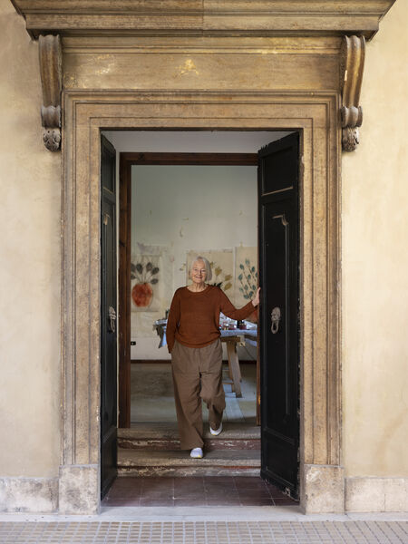
Isabella Ducrot’s debut solo show with Petzel Gallery in New York this past January opened with a quote from the artist: “You can make a drawing of two people in love, but the tenderness doesn’t always come out. I’m trying to make tenderness come out, tenderness and the possibility of touch.” This feeling radiates through Ducrot’s luminous depictions of flowers, lovers, and landscapes. It also describes the way she transforms rare, centuries-old papers and fabrics sourced from across the globe in her collages and works on paper—and the way she has gently enchanted the art world. Hardly a month passed this year without a major moment for the Rome-based artist, whose rise to renown primarily took place after she turned 90. Ducrot’s Petzel show coincided with Big Aura (2024), her stunning installation that enveloped Dior’s spring/summer runway show at the Musée Rodin in Paris. In April, her solo show at Le Consortium in Dijon, France, marked her first major international museum exhibition. By June, her second solo show with Sadie Coles HQ opened in London, followed in August by another exhibition at the Museo delle Civiltà in Rome.
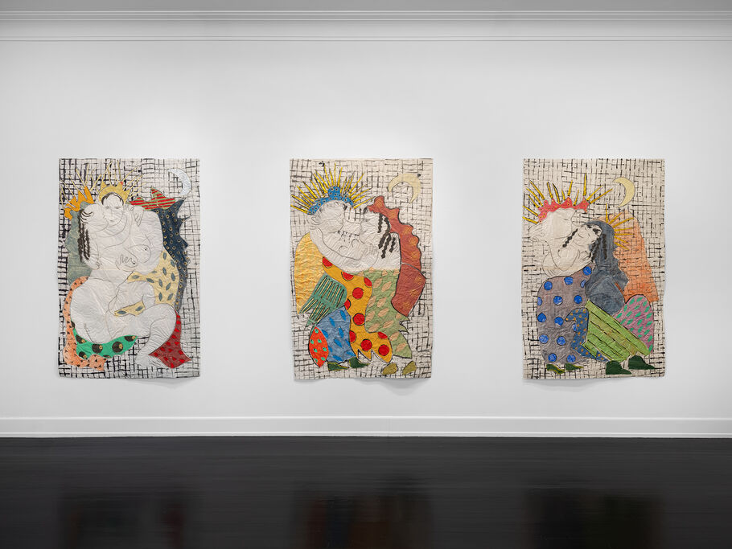
In October and November, Ducrot’s work was presented in solo booths at Frieze Masters and ADAA’s The Art Show—she is represented by Petzel, Sadie Coles, Galerie Gisela Capitain, Capitain Petzel, and Standard (Oslo)—cementing her status as a favorite among collectors. Yet it may well have been a widely admired New Yorker profile by Rebecca Mead that really catapulted Ducrot into the public consciousness this year. Ultimately, her work transcends trends, offering a timelessness that is delightfully seductive.
—Casey Lesser
Julie Mehretu
B. 1970, Addis Ababa. Lives and works in New York and Berlin.
Known for her frenetic markmaking and meticulously layered paintings,
Julie Mehretu cemented her place as one of the preeminent abstract artists
in the world this year.
Her high-profile year was marked by both market and institutional milestones.
Insile (2013) sold for $9.5 million at the third edition of Art Basel Paris,
while her largest European exhibition to date, “Ensemble,” opened at Palazzo Grassi
just before the 2024 Venice Biennale and will run through January 2025.
If that wasn’t enough to make her one of the most influential names of the year,
Mehretu was tapped to create an installation for the new Obama Presidential Center
in Chicago, which will adorn the museum’s façade when the campus opens in 2026.
In New York, where the artist is based, she contributed $2.25 million to the
Whitney Museum’s new “Free 25 and Under” program, ensuring greater accessibility
for the next generation of art enthusiasts.
Potentially the flashiest landmark of Mehretu’s year is her design for the 20th BMW Art Car.
Unveiled in May at the Centre Pompidou, her design for the BMW M Hybrid V8 represents her
explosive aesthetic, drawing directly from her painting Everywhen (2021–23), which
is currently on view in her Palazzo Grassi retrospective.
—Maxwell Rabb
Alvaro Barrington
B. 1983, Caracas. Lives and works in London.
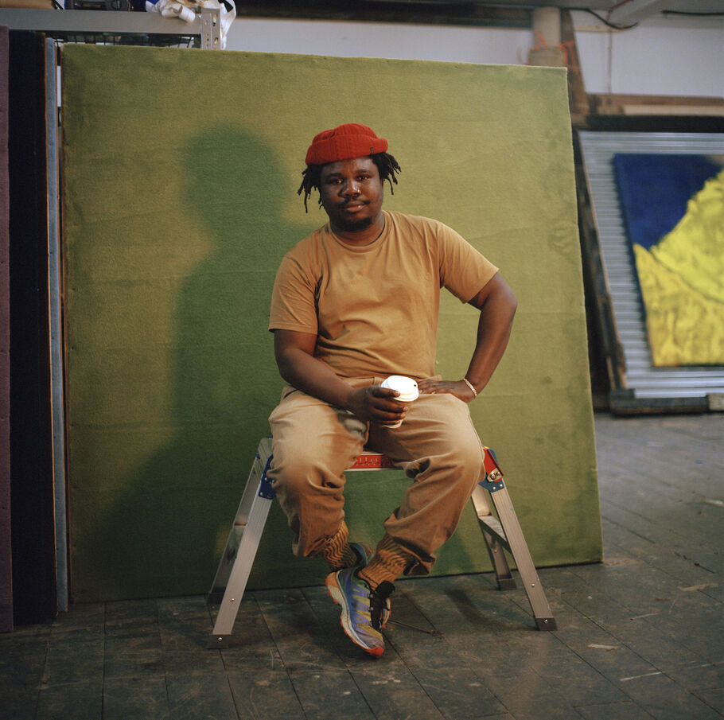
Ever since completing his MFA at the Slade School of Art in 2017, Alvaro Barrington has gone from strength to strength. BLUM, Thaddaeus Ropac, and MASSIMODECARLO are just a few solo show venues for the Venezuelan-born artist, whose paintings often incorporate burlap, postcards, and clothing. This year, however, Barrington’s biggest moment was not a top-tier gallery show (though he had some of those, at Mendes Wood DM and Thaddaeus Ropac, for instance). Instead, it was a monumental commission at Tate Britain. His installation, titled Grace, is a three-part project that uses sound, painting, and sculpture to celebrate the influence of women in Black culture. It also serves as a personal tribute, honoring women from his own life: his grandmother, mother, and a close friend, Samantha. At the heart of the installation is a 4-meter-tall aluminum sculpture of a dancing woman.
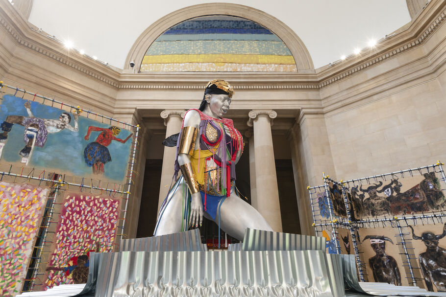
All the while, the London artist’s presence has been felt worldwide, from inclusion in group shows at El Espacio 23 in Miami and James Fuentes in New York to his colorful installations at the Glastonbury Festival in England. Perhaps most notably, in the Parcours sector of Art Basel in June, Barrington unveiled Come Home (2024), an architectural installation inside the city’s Tropical Zone supermarket—a space serving the local Afro and Latin American communities. This structure, built from traditional Caribbean materials like burlap and timber, featured new abstract paintings from his “Hibiscus” series.
—Maxwell Rabb
Joan Jonas
B. 1936, New York. Lives and works in New York and Nova Scotia, Canada.
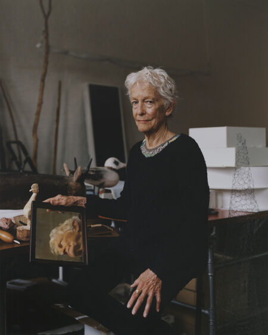
Video and performance art owe much to New York artist Joan Jonas. During the 1960s and ’70s, Jonas was at the forefront of establishing video performance as a medium. However, as she modestly insisted in a recent Vogue interview, she never considered herself a “pioneer.” Mirrors, the wind, and her alter ego, named “Organic Honey,” are the subjects in her boundary-pushing videos. And this year, these significant works were featured in a major retrospective at the Museum of Modern Art in New York, titled “Good Night Good Morning.” It was unmistakably the season of Jonas in New York. Coinciding with the MoMA retrospective, the Drawing Center mounted “Joan Jonas: Animal, Vegetable, Mineral,” presenting 300 drawings from the artist’s collection of some 2,000 works spanning her 60-year career. Elsewhere, Jonas’s work appeared on clothing in Rachel Comey’s spring 2024 collection.
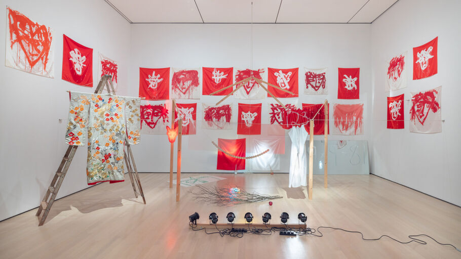
Just last month, Jonas was awarded the 2024 Nam June Paik Prize by the Nam June Paik Art Center in Korea. Frances Morris, former director of Tate Modern and chair of the international jury, commented on the decision: “Jonas not only played a key role in shaping early video and performance art but continues to explore urgent new terrain.”
—Maxwell Rabb
Kim Yun Shin
B. 1935, Wonsan, North Korea. Lives and works in Buenos Aires and Yanggu, South Korea.
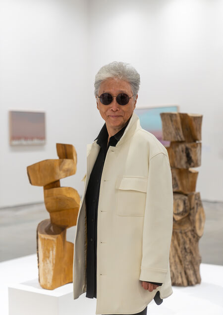
Kim Yun Shin emerged dramatically on the global art scene this year at the age of 88, after spending more than six decades crafting kaleidoscopic paintings and chainsaw-carved wooden sculptures largely outside the limelight. This noteworthy year for Kim kicked off after gaining dual representation at Lehmann Maupin and Kukje Gallery, with solo exhibitions in New York and Seoul, respectively. Kim’s work, now known for exploring themes like natural harmony, stood out at the 60th Venice Biennale’s main exhibition. The display featured eight sculptures, four carved from wood between 1979 and 1986 and four sculpted from stone between 1991 and 2001. These pieces are part of her long-standing series “Add Two Add One, Divide Two Divide One,” inspired by the Chinese philosophy of yin and yang.
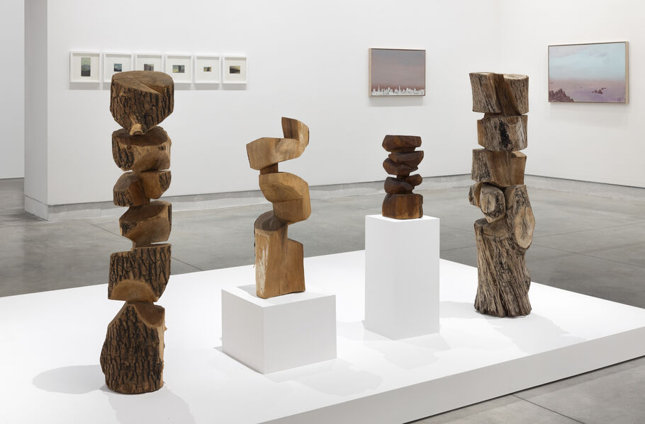
Lehmann Maupin debuted Kim’s work at Frieze L.A. in February. Since then, the artist has become a mainstay at art fairs around the world, featured in major booths at KIAF, Frieze Seoul, and Art Basel Miami Beach, among others.
—Maxwell Rabb
Shahzia Sikander
B. 1969, Lahore. Lives and works in New York.
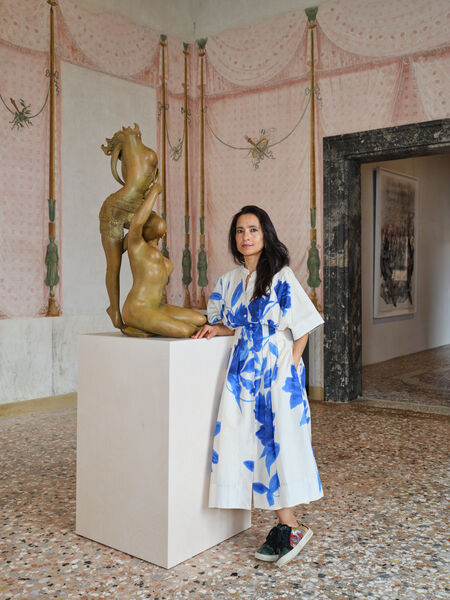
In April, Shahzia Sikander opened the most comprehensive survey of her three-and-a-half-decade career to date. An exhibition of this scale, mounted as a collateral event to the Venice Biennale, would have been the headlining event in most artists’ years. But Sikander was unwittingly thrust into an even bigger spotlight in July, when her 2023 sculpture Witness was violently defaced after getting caught in the crosshairs of the culture wars. Originally installed in New York’s Madison Square Park, where it stood in the shadow of the Manhattan Appellate Courthouse, Witness symbolizes women’s strength in the context of a legal system that has historically failed us. The towering metallic figure’s coiled braids evoke the ram’s horn motif—a symbol of power—found in the courthouse’s architecture. Its lace jabot honors Ruth Bader Ginsburg, who often wore decorative collars with her judicial robes.
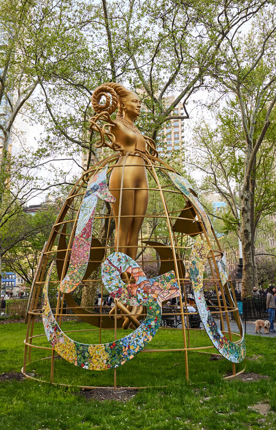
The invocation of Ginsburg, and references to the overturning of Roe v. Wade in an artist’s statement that accompanied the installation, caught the attention of conservative media and anti-choice advocates, who interpreted the work as pro-abortion and “satanic.” There were protests when it was installed in University of Houston earlier this year; a vandal, presumed to be ideologically motivated, ultimately decapitated the sculpture with a hammer.
Rather than repair it, Sikander allowed the figure to remain headless—a gesture that underscored the work’s feminist message by laying bare the violence that is inflicted upon women who attempt to assert their own agency. The episode was a salient reminder of art’s power to stir emotions and inspire debate—and of the uncanny ways in which life and art mirror one another.
—Olivia Horn